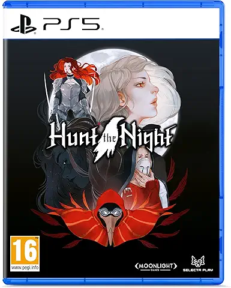

Hunt the Night es un juego de acción y exploración con estética oscura inspirado en los clásicos de 16 bits. Controlas a Vesper, una cazadora perteneciente a la Orden de los Stalkers, que debe enfrentarse a criaturas aterradoras para recuperar la luz de un mundo consumido por la oscuridad. El juego combina combates rápidos y desafiantes, jefes imponentes, puzles y una ambientación gótica llena de misterio. Con un estilo visual detallado y una historia sombría, Hunt the Night ofrece una experiencia intensa ideal para los fans del pixel art y los juegos de acción exigentes.